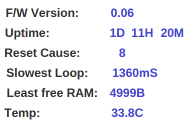

I'm running the emonTxV3_3Phase_Voltage.ino sketch and notice that the readings on input CT3 are funny.
It flip flops between zero and the actual reading, ie it shows a reading like 200w then 5-10 sec's later switches to zero, then back to 200w then back to zero. I hope that makes sense.
I don't think that's normal or is it?
(I've tried swapping the CT2 and CT3 clamps but get the same problem, so regardless of the clamp or the line its measuring, input ct3 has this strange behavior).
You can see this happening @ emoncms.org/hpsolar
On a separate note - if I want to use CT4 on phase 3 (instead of phase 1), do I merely change line 119 - double Phasecal4 = 1.00; to read Phasecal4 = 1.37 (same as Phasecal3)?
Thank you.
Re: CT3 delayed readings?
That does not make sense. And nobody else has reported a problem of this nature. The power for line 3 is calculated, as I'm sure you can see if you read the sketch, by multiplying the instantaneous current from CT3 by a delayed sample of the voltage of line 1 (and interpolated between samples as necessary to 'fine-tune' the delay). Which sketch are you using, and has it been changed? The power dropping to zero implies either the current or voltage or both become zero. Is the current reading for CT3 showing similar variation? Is the voltage? What is you power supply system (frequency, voltage, etc)?
If you want to use CT4 on phase 3, you can either rotate all the phases (so phase 3 becomes phase 1, phase 1 becomes phase 2, phase 2 becomes phase 3) or you can multiply the CT4 current by the delayed voltage that CT3 uses.
Re: CT3 delayed readings?
Which sketch are you using, and has it been changed?
I'm running the 3 phase one from here -> https://github.com/openenergymonitor/emonTxFirmware/blob/master/emonTxV3...
I changed line 110 double Vcal = 276.9 to 290.9 to match my mains of 246v.
Is the current reading for CT3 showing similar variation?
I haven't pulled the emontx from my meter box to check yet. However, reading my mains meter, phase3 is consistently around 1.08-1.09A. Voltage is 246, 247 etc.
At this stage I don't think its
1. the clamp, as it works fine plugged into input 2.
2. anything to do with the power line ie no fluctuations in voltage or current because its fine when measured using input 2.
So that leaves the sketch or emontx hardware??
multiply the CT4 current by the delayed voltage that CT3 uses.
so change line 395- sumP4 += phaseShiftedV1 * filteredI4 to
sumP4 += phaseShiftedV3 * filteredI4 ?
and no need to change line 119- double Phasecal4 = 1.00 to 1.37 like Phasecal3?
Re: CT3 delayed readings?
CT4:
Correct. But if the phase calibration is wrong, then you'll need to replicate line 383 to give you a new variable phaseShiftedV4 that uses Phasecal4. That shouldn't be necessary if the CT's have similar phase errors. (Phasecal4 isn't actually used - I slipped up there!)
Regarding the original problem:
An obvious question I should have asked earlier: Is the serial output of your emonTx giving correct or wrong values? If that's correct, is your emonBase receiving the correct values?
We've recently changed emonLib to use a low pass filter instead of the high pass to remove the bias offset, I'll rework the sketch (which doesn't use emonLib) to do the same and let you have that. Meanwhile, I wonder whether the serial prints are causing the problem? Try commenting out "#define SERIALPRINT" at the top (but not before you check the output!).
I'll run the sketch and look for zero values, but I don't expect to see anything as I never noticed anything untoward whilst developing and testing the sketch, and as I mentioned no-one else seems to have seen this either.
Re: CT3 delayed readings?
Note: You have not answered the frequency question yet. That sketch is for a 50 Hz system.
Re: CT3 delayed readings?
I have run the sketch on my test rig for about an hour. The test current in CT3 was approx. 1.9 A
It has sent 1008 valid readings (after discarding the first 5 as the filters settled), and there is not a single reading where the CT3 current does not start with the digit "1". There are 7 instances where it starts "1.86" 67 with "1.87", 200 with "1.88", 352 with "1.89", 270 with "1.90" 96 with 1.91, 16 with "1.92"
On that basis, I don't have any evidence to suggest that there might be an inherent problem with the sketch.
It might be worth checking whether the rest of your system can handle a reading every 3.5 s approx, and you might want to reduce that rate to say one every 10 s, especially if you are using emoncms.org, as Trystan likes people to not send data more frequently than once every 10 s, to better share out the limited (and free to you!) resources.
Re: CT3 delayed readings?
Thank you.
I'm in Australia, so yes to 50hz.
My serial output:
(have not commented out #define SERIALPRINT, also note I have not uncomment CT4 yet its still //#define CT4 )
10 231 0 214 0 0 0 0 0 250 0
10 231 0 217 0 254 253 0 0 249 0
10 240 0 219 0 0 0 0 0 250 0
10 230 0 210 0 2 254 0 0 250 0
10 233 0 216 0 0 0 0 0 250 0
10 238 0 218 0 255 253 0 0 249 0
10 230 0 217 0 0 0 0 0 249 0
10 232 0 223 0 254 253 0 0 249 0
10 231 0 211 0 0 0 0 0 250 0
10 255 0 221 0 254 253 0 0 250 0
10 231 0 214 0 0 0 0 0 250 0
10 231 0 219 0 252 253 0 0 249 0
10 245 0 217 0 0 0 0 0 249 0
Got to go to work, back in 8 hours :-)
ps I don't think this makes a difference but my PV solar is fed into phase 3. I don't think the solar input has any bearing on the zero effect since it occurs 24/7 ie night time when solar is off.
Re: CT3 delayed readings?
On the emonTx V3, the burden resistor for CT4 is likely to be smaller than for the other three, so that channel may not be suitable for this purpose (i.e. to act as part of a set of 3)
The sensitivity of any CT can be checked by running one of my RawSampleTool sketches. This will show the raw ADC samples for voltage and current during one or more mains cycles. RawSampleTool_4ss_2.ino is near the top of my Summary Page.
Re: CT3 delayed readings?
We can't be looking at the same sketch. The serial output in the sketch you said you were using sends 13 values, and has the variable names preceding the values, viz:
Voltage: 246.11
Current 1: 0.00 Power 1: 0.00 VA 1: 0.00 PF 1: nan
Current 2: 0.00 Power 2: 0.00 VA 2: 0.00 PF 2: nan
Current 3: 1.90 Power 3: 310.36 VA 3: 468.46 PF 3: 0.66
Re: CT3 delayed readings?
just to clarify, to get the serial output above, I remote into the Pi and run a python cmd, eg python -m serial.tools.miniterm -p /dev/ttyAMA0 -e
(its raining here and the emontx is in my meter box which is outside so I haven't been able to grab a laptop and connect it directly to the emontx to run the sketch). Hope that helps.
edit: just a thought, the serial output from the python cmd comes directly from the emontx and not via the sketch right? If so then the error is with the emontx hardware?
Re: CT3 delayed readings?
"the serial output from the python cmd comes directly from the emontx and not via the sketch right?"
I haven't a clue what you mean there. You're well tangled up with your understanding. The sketch is the software that controls what the processor in the emonTx does. That includes processing the data from getting values from the ADC to sending numbers to be transmitted by the radio module. I am printing to the serial port on the emonTx the numbers derived from those measurements, and I have not seen one faulty value in >2000 measurements.
I realised after I wrote, that you're not looking at the data that the sketch in the emonTx is generating, so you can't blame the emonTx hardware nor the sketch until you've shown that its output is faulty. From what I've done here, that's not the case and it's more likely that the data isn't being received properly, though that might be because the sketch is sending it too frequently for the Pi to handle.
I haven't got a working RPi here (I've had one for months, I've not had time to figure out how to set it up) so I can't offer a comment on that other than to suggest that as a further line of investigation.
Re: CT3 delayed readings?
I meant by that running the command "python -m serial.tools.miniterm -p /dev/ttyAMA0 -e", it would return data from the emontx as raw data and not processed data. Its a similar command to "minicom -b 9600 -o -D /dev/ttyAMA0".
However, if like you say the sketch controls the emontx then the data I'm seeing has been processed through the sketch.
Anyway, I've changed the sketch by adding CT4 and it seems my problem is gone.
Thank you very much for your help.
Re: CT3 delayed readings?
That I definitely DO NOT understand - it has to be a fault in the processing after reception in the RPi.
Re: CT3 delayed readings?
@Robert - After reading mtran's last post I too thought it was extremely odd and assumed it was probably something more to do with reloading the sketch rather than the ct4 code itself. mainly because I have vague recollection of another user having an issue with just one channel of a emonTx v3 that mysteriously vanished (the fault not the emonTx that is!) from what I recall we thought it was interference until it just disappeared.
However your reply made me question that theory and thought about it some more. My assumption was based on no more than the fact the serial print was the serial incoming to the Pi and unlikely to have been effected yet, plus the fault occurs every second packet which seemed too regular to be a "random effect" rather than a "incorrect result". Whilst considering RF issues I realised I didn't know for sure how the emonTx was connected, looking at mtrans other threads, the plot thickens......
I'm guessing here that he may not be using an rfm2pi and the 3phase sketch is modified to give a direct serial output and the "issue" may of actually been circumvented when adding ct4 print statements.
Or there is also a possibility a jeelink or a bluetooth device maybe influencing the serial data, to boot.
@mtran - Are you using a RFM2Pi ? can you confirm how you are connecting the emonTx and if there are any other serial devices.
Paul
Re: CT3 delayed readings?
Paul,
In the absence of information to the contrary, and he did confirm he had not changed the sketch, I have to assume people are using the "standard" set-up, i.e a Radio link.
I wondered - maybe you can confirm - is the "standard" RFM12Pi plus his router and emoncms.org capable of handling data every 3.5 s? I'd have thought so for the first part, maybe not the second (but I'm not sure how that explains only CT3 going missing). I don't know, and can't replicate what I assume is his set-up. All we know is he's happy.
Re: CT3 delayed readings?
Absolutely, It wasn't until I questioned my own assumptions the non-rfm2pi possibilities came to mind. He may well be using an rfm2pi, in fact the 10 serial print values are possibly the 5 byte-pair ints, but if that is the case ct3 values should be "flip-flopping" between 0 and -500w (minus 500).
What defines the 3.5 seconds ? is it the 3second sleep in the if settled?
I would be surprised if the setup couldn't handle a 3.5sec interval as it should cope with 3 emonTx's at 10 seconds each, which would present the same frequency of intervals, if any part was likely to object I guess it would be emoncms.org and then the packets would just be buffered until it did accept them.
Very odd!!
Re: CT3 delayed readings?
my setup is an rpi B+, RFM12Pi, and the emontxV3 (433Mhz ) bought back in late Nov.
I also have a usb-serial cable connected from my solar inverter (serial) to the rpi (usb). A script on the rpi collects the inverter data and publishes it to pvoutput.org.
Re: CT3 delayed readings?
Aside from editing the "#defines" and "Vcal" is the emonTx v3 sketch all original? and still behaving ?
Re: CT3 delayed readings?
"What defines the 3.5 seconds ? is it the 3second sleep in the if settled?"
Yes - plus of course the time to execute the main loop.
I don't accept that it's a random effect, but there may be some strobing going on. So if it goes away for some minutes and then returns, that's a likely explanation. So the finger of suspicion points at something else happening every 7 s approx (or an odd sub-multiple of that: 2.33 s, 1.4 s, 1 s, etc). But what's the mechanism by which it is writing zeros into CT3 and only into CT3? This is what's sent:
struct { int power1, power2, power3, power4, Vrms;}
That doesn't change. If CT4 is not defined, it's outputs are set to zero each time, but power4 is still sent. So the "0 0" before the 249/250 is correct.
Re: CT3 delayed readings?
The script is all original besides the vcal value.
The second edit was to uncomment //#define CT4 and changed line 395- sumP4 += phaseShiftedV1 * filteredI4
Re: CT3 delayed readings?
The serial output above gives the following int values for that struct
which is remarkably consistent,
Re: CT3 delayed readings?
and the minus 500 values on phase 3 are due to the PV exporting back to the grid.
Also on the phase 3 line are bunch of aquarium equipment eg water & air filters, so the line has a constant consumption of 200-300w (that -500 is the net; gross PV is probably 700-800w). Therefore there should never be a zero reading on the phase 3 line.
Re: CT3 delayed readings?
There wasn't a zero reading on the phase 3 line! It was "nan" or "ovf", that was presumably being converted to zero in the RPi. And that's what threw us.
I have managed to replicate the problem - by accident - when converting the sketch to use the low-pass filter (in order to remove the problem of wild values at start-up as the filters settle). I've also had meaningless numbers, powers of 200 kW with 6kVA and pf = 33.
I think therefore it's a memory addressing or buffer overflow type of problem, but I don't yet know the exact cause.
Re: CT3 delayed readings?
I think I have finally got to the root of the problem here. It appears to be a case of the old problem where the memory heap growing upwards meetsg the stack growing downwards; but what fooled me for a long time was MemoryFree() was reporting over 1000 bytes of free memory, also the fact that no text strings were corrupted - the usual symptom.
The cure (so far) is to surround all the string literals with the "F" macro, which has the effect of leaving them in flash memory and thus freeing up around 500 bytes of static RAM:
e.g:
Serial.println("OpenEnergyMonitor.org");
becomes
Serial.println(F("OpenEnergyMonitor.org"));
Re: CT3 delayed readings?
Most of those AVR memory checkers compare the largest the heap has ever been, with where the stack is now, so you need to call them from wherever you think your deepest stack is likely to occur. I use a wrapper routine that tracks the smallest it's ever been, and call that from various low-level routines that I know get called when things are deep:
static void check_free_ram() { int free_ram = freeRam(); if (free_ram < smallest_free_ram) smallest_free_ram = free_ram; }Then I just check smallest_free_ram at my leisure, and even post it to an emoncms feed whenever it changes for a simple but useful diagnostics page:

Re: CT3 delayed readings?
The deepest this goes is in the "calculate 3 phase" function where it's got the stored values array, the filter and rms variables all as doubles. And that's precisely where I was checking.
Re: CT3 delayed readings?
So how did you determine that the root cause was the stack crashing into the heap? Were you able to determine why the memory checker failed to see it?
Re: CT3 delayed readings?
I haven't proved it, but having moved 500 bytes or so of string literals out of SRAM, the problem went away. Of course, it might still be a wayward pointer that's now dumping data where it doesn't matter...
But as pdcleyn still has a problem and he'd already done that, I'm beginning to wonder again. Without a decent in-circuit debugger, I'm very much groping in the dark.
I've never had the memory checker show less than a hundred or so bytes even when there have been problems - it just can't catch the last few. Which is why I thought with around 1100 bytes 'free' there shouldn't have been a problem. And which is why I'm thinking again.
Re: CT3 delayed readings?
I've never had the memory checker show less than a hundred or so bytes even when there have been problems - it just can't catch the last few.
Problems as in corruption, or problems as in failed mallocs()? There's a global variable called __malloc_margin which in Arduino land seems to be set to 128. In AVR land I think it's set to 32. When it's about to expand the heap, it uses the current stack pointer less that number as its upper limit as to what it can expand to if it needs to. I think it's a primitive guess at what the dynamic range of the stack size will be.
You can see all this code (and change it and debug it) here:
arduino-1.0.5/hardware/arduino/cores/arduino/avr-libc/malloc.c
In theory, you can also change those variables' initial settings from your own module, but it must be done before any calls to malloc(), including any done by the runtime behind your back. It may be that if it's the very first thing you do in setup() you might be ok, but I haven't confirmed that. Editing malloc.c and restarting the IDE is an alternative.
[EDIT] Actually, do you guys do any malloc'ing or C++ new'ing, or are all your classes and variables confined to .data, .bss and the stack?
Re: CT3 delayed readings?
I've never seen a malloc/realloc or a new in any code around here. The usual symptom is gibberish strings, which in itself is pretty harmless but an indication of a problem, and the usual cure is to get rid of some or shorten them.
My next line of investigation will be JeeLib. That's recently had the RFM69CW added so it's realistic to suspect that it has grown as a result. Some while ago a change to (and an expansion of) the Ethercard library resulted in the Nanode RF sketch blowing up, and I suspect that a similar thing has happened here, since all reports of problems have been confined to this year, which is roughly when the change to JeeLib happened.
Re: CT3 delayed readings?
Actually, .data lives below .bss, so if the stack is trampling over your strings it's probably already taken out your static variables on the way down.